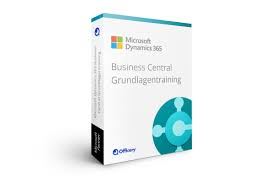

Microsoft Dynamics 365 Business
Se trata de un software de gestión empresarial multilenguaje, activo en 155 países y que cuenta con 22.000 clientes, que se adapta a empresa pequeña, mediana y grande. Microsoft Dynamics 365 Business Central (Navision) es seguro y escalable que se integra de forma nativa con Power BI, Microsoft 365 (Word, Excel, Outlook), SharePoint y con Microsoft Dynamics 365, el CRM de Microsoft, cerrando así el círculo de soluciones de negocio para la empresa.

a3ERP
Permite la integración total entre las soluciones entre las empresas y sus clientes, ofreciendo una visión 360º de todas las áreas y procesos administrativos. Dispone de una eficaz gestión de cartera de cobros y pagos, y de un control avanzado de los activos fijos y sus amortizaciones. Incluye también potentes herramientas de Business Intelligence para elaborar cuadros de mando que faciliten el análisis de la información para la toma de decisiones.
arcGIS Online
Los avances tecnológicos han permitido la evolución de ArcGIS a ArcGIS Online, la versión cloud y colaborativa del software de información geográfica, SIG, de Esri. En Compusoft, con nuestro afán innovador, somos especialistas en desarrollar software sobre esta herramienta adaptando siempre nuestras soluciones a las necesidades de nuestros clientes, y especializándonos en movilidad
KERS Logistics
Redefine el concepto de eficiencia de todos los procesos de la cadena logística mediante la suite de soluciones de logística y transporte para empresas de múltiples industrias, incluidas alimentación y bebidas, venta minorista, comercio electrónico y muchas más. Una solución innovadora, transparente y creativa, para aportar a las empresas un software que mejore su negocio, a la vez que las hace más sostenibles y eficientes. Somos tu socio logístico. Somos KERS Logistics.
WebFleet
Además, cuenta con innovadores y reconocidos productos para la gestión de flotas y localización de vehículos en un enorme rango de sectores de actividad transporte de mercancías y pasajeros, servicios de mensajería, servicios de asistencia técnica y mantenimiento, servicios sanitarios y de emergencias. Por otro lado, la arquitectura de sus sistemas software nos permite integrar dichos productos y soluciones con los sistemas de gestión de las empresas que quieran beneficiarse al máximo de las ventajas que ofrece, integrando las distintas funcionalidades con su flujo de trabajo.
Geotab
Gracias a un único dispositivo instalado en el vehículo se obtiene gran cantidad de datos (Big Data) integrados en un software mediante el cual se analizan y se utilizan para mejorar la productividad, optimizar las flotas y mejorar la seguridad de los conductores. En Compusoft, gracias a nuestro conocimiento y experiencia, somos partners de Geotab (Geotab Authorized Reseller) lo que nos permite ofrecer soluciones de gestión de flotas desarrolladas según las distintas necesidades. Proyect@ nace de la necesidad de añadir un sistema para la gestión de proyectos al software de gestión empresarial a3ERP, de la firma Wolters Kluwer, incorporando utilidades que mejoran la operativa de trabajo con a3ERP gracias a elementos específicos diseñados para la gestión de proyectos.
Proyect@
Proyect@ es una solución orientada a empresas de cualquier sector de actividad en la se necesite realizar una gestión de proyectos, gestión de centros de trabajo o gestión de elementos que requieran un control económico y de los recursos que tenga asignados (ingenierías, consultoras, facilities…).
Nexus eCommerce
Con Nexus e-Commerce dispone de un potente gestor de venta en INTERNET, flexible y adaptable a las caracterísitcas de venta propias de su negocio, permitiendo parametrizar su imagen corporativa. Además, podrá dirigirse tanto a clientes finales (B2C) como a su posible canal de venta habitual (B2B), utilizando la información que ya tiene configurada en Nexus: artículos, stock, clientes, tarifas, precios especiales, tallas, colores..